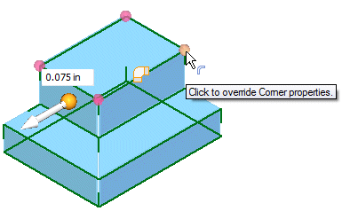
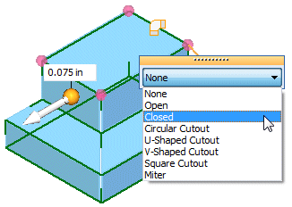

Override the corner treatment
-
Click the corner you want to override.

-
On the dynamic edit control, select a corner treatment change.

-
Right-click to apply the treatment change.
Note:
You can make the changes to corner treatments while converting the part or you can edit the corner treatment after the part has been converted.
How do I
Convert a part to sheet metalOverride the bend values
Transform a document to a synchronous sheet metal part
Transform a sheet metal part
Rip a corner of a sheet metal part
Learn more
Converting part documents to sheet metalLook up more details
Part to Sheet Metal commandPart to Sheet Metal Options dialog box
Thin Part to Synchronous Sheet Metal command
Thin Part to Synchronous Sheet Metal command bar
Thin Part to Sheet Metal command
Thin Part to Sheet Metal command bar
Thin Part to Sheet Metal Options dialog box
Rip Corner command
Rip Corner command bar